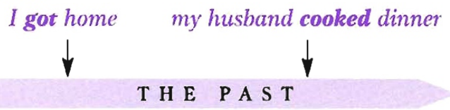
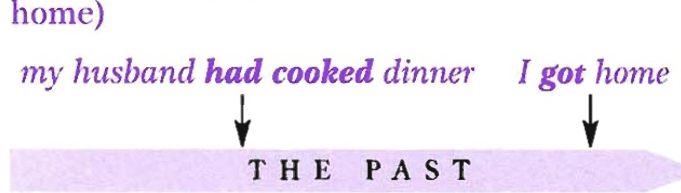
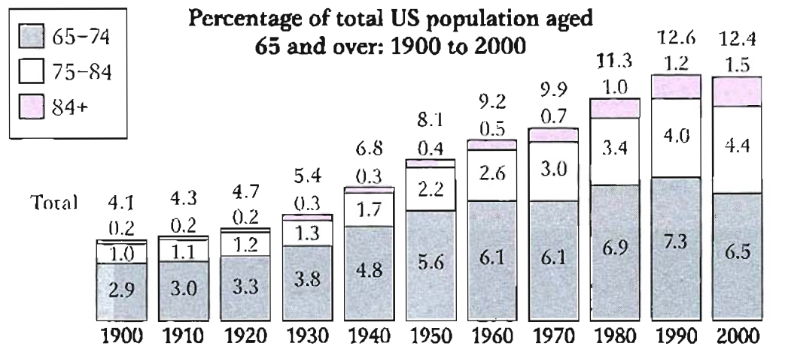

Pre-listening: Vocabulary — Mozart
You will hear a woman giving a talk on the famous composer, Mozart. Before you listen, match the words (1–10) with the correct meanings (a–j).
Listen and complete the notes — Track 06
Track 06 — A talk on Wolfgang Amadeus Mozart
Context listening — the young Mozart
Now listen and complete the notes below.
🎼 Wolfgang Amadeus Mozart
Listen to the text again and fill in the gaps
For each sentence underline which event happened first
Look at your answers to Exercise 3 and answer these questions.
B1 — Past Perfect Simple
| Form | Example |
|---|---|
| + had + past participle | They had listened to his music. |
| − had not + past participle | They hadn't listened to his music. |
| ? Had … + past participle? | Had they listened to his music? |
We use the past perfect simple:
- When we are talking about the past and want to mention something that happened earlier:
His father was a composer and his grandfather had also been a musician.
(Mozart's grandfather was a musician and then later his father became a composer) - Sometimes we use words like just or already. Notice that these adverbs go between the auxiliary and the main verb:
By the time he was 17, Mozart's reputation had already begun to spread through Europe. - We use the past simple tense if the events are mentioned in chronological order:
His grandfather was a musician and his father was also a composer.
with words like when, as soon as, by the time, after to show the order of events:
When Mozart was born, five of his siblings had already died. (Mozart's siblings died first, then Mozart was born) - To show the difference in meaning between these two sentences:
When I got home, my husband cooked dinner. (= I got home and then my husband cooked dinner)
Past simple: events in chronological order — I got home, then my husband cooked dinner
When I got home, my husband had cooked dinner. (= my husband cooked dinner before I got home)
Past perfect simple: the earlier event happened first — my husband had cooked dinner before I got home
- To talk about an indefinite time before a particular point in the past, often with words like always, sometimes, never, before, by + fixed time:
His family were richer than they had ever been before. (= they were not as rich at any time before this point in the past)
By the time he was six, the little boy had written a composition of his own. - To report past events using reporting verbs (see Unit 15):
The man told me he had met my father a long time before.
B2 — Past Perfect Continuous
| Form | Example |
|---|---|
| + had been + verb + -ing | She'd been studying for ages. |
| − had not been + verb + -ing | He hadn't been studying for long. |
| ? Had … been + verb + -ing? | Had you been studying for long? |
We use the past perfect continuous:
- To focus on how long an activity continued or to focus on the activity itself:
Times were hard and the family had been struggling for some time. (to show how long)
Mozart's sister was extremely gifted at the keyboard and she had been making excellent progress. (focus on the activity)
I knew the way as I had visited her several times before. (not: I had been visiting her several times before)
Grammar extra: Unfulfilled hopes
We use the past perfect to talk about past disappointments or things that did not happen as expected:
The politician had expected to be re-elected, but in the end she only got ten per cent of the vote.
I had been hoping to go with my brother on his trip but I was too sick to go.
Fill in the gaps with the past perfect simple of the verbs in brackets
Fill in the gaps with the past perfect simple of the verbs in brackets in the positive or negative.
Look at the chart and fill in the gaps — past simple or past perfect simple

Percentage of total US population aged 65 and over: 1900 to 2000
The number of people aged between 75 and 84 3 (remain) fairly steady between 1900 and 1930, making up only 1–1.3% of the population. The figure 4 (begin) to rise more significantly in 1940 and by 1970 it 5 (triple) to reach 3% of the population.
Although there 6 (be) no change in the number of people aged 65–74 between 1960 and 1970, the number of people aged 75 and over 7 (increase) during this time. By the year 2000, 12.4% of the US population 8 (reach) the age of 65 or more, although this was slightly lower than in 1990 when it 9 (peak) at 12.6%.
The chart shows that today people in the United States can expect to live longer than in 1900. By the year 2000 more than 12% of the population 10 (manage) to live to the age of 65 and over compared to only 4.1% in 1900.
Fill in the gaps — past simple, past perfect simple or past perfect continuous
Fill in the gaps with the past simple, past perfect simple or past perfect continuous of the verbs in brackets.
My friends and I 6 (come) in the hope that by the end of the day we would be able to say we 7 (walk) across hot, burning coals.
Our teacher was very good, and by teatime we 8 (learn) a great deal and 9 (prepare) the fires. I 10 (expect) to be terrified when the time came to walk, but as I 11 (take off) my shoes and socks I 12 (not/feel) afraid.
I 13 (approach) the coals as all my friends before me 14 (do), and started walking! I could feel the heat, but as I 15 (step) back onto the grass at the other end I knew the coals 16 (not/burn) my feet at all.
As I 17 (hope), all my friends 18 (manage) the walk and none of us were burnt. The whole experience was amazing, and I just wished I 19 (do) it sooner.
Fill in the gaps with a verb from the box
Fill in the gaps with a verb from the box in the past simple, past perfect simple or past perfect continuous tense. Use each verb once.
The history of the biro
Questions 1–6 — Choose the most suitable heading for each paragraph
List of Headings
Write the correct number i–ix in the space provided.
Questions 7–9 — Choose the correct answer, A, B, C or D
Questions 10–12 — Short-answer questions
Write NO MORE THAN TWO WORDS AND/OR A NUMBER for each answer.
Complete the extracts with the correct verb form
The day before, Gimbels 1 (take out) a full-page newspaper advertisement in the New York Times, announcing the sale of the first ballpoint pens in the United States… Within six hours, Gimbels 2 (sell) its entire stock of ten thousand ballpoints at $12.50 each — approximately $130 at today's prices.
Extract 2
In 1884 Lewis Waterman 3 (patent) the fountain pen, giving him the sole rights to manufacture it. This marked a significant leap forward in writing technology, but fountain pens 4 (soon/become) notorious for leaking.
Extract 3
Ladislas 5 (observe) (that the type of ink used in newspaper printing dried) rapidly, leaving the paper dry and smudge-free.
Extract 4
Immediately seeing its commercial potential, he 6 (buy) several pens and 7 (return) to Chicago, where he 8 (discover) that Loud's original 1888 patent 9 (long since/expire).
Extract 5
Following the ballpoint's debut in New York City, Eversharp 10 (challenge) Reynolds in the law courts, but 11 (lose) the case because the Biro brothers 12 (fail) to secure a U.S. patent on their invention.